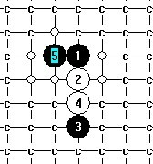
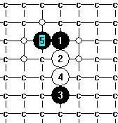
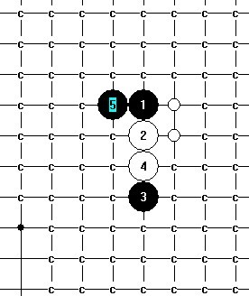
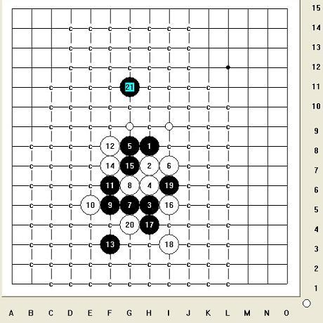
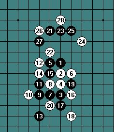

大寒星的这个四用这个五怎么样?
#1 大寒星的这个四用这个五怎么样?作者：安娜制作所 发表时间：2010-12-28 8:15:49
［此帖子已被 安娜制作所 在 2010-12-28 10:20:42 编辑过］
#2 Re:大寒星的这个四用着个五怎么样?作者：日月丽天 发表时间：2010-12-28 8:35:12
=======上图对应的爱五子棋谱代码如下，以便你拆解：========
h8h7h5h6g8g7f8e8i7i8j6k5j9k8f7g9f5f6g5
======================================================
一个6，一个6的来，
帮你搞定一个6，来朵鲜花
［此帖子已被 日月丽天 在 2010-12-28 8:38:11 编辑过］
［ 安娜制作所 于 2010-12-28 10:07:45 时花20金币送鲜花一朵］
#3 Re:Re:大寒星的这个四用着个五怎么样?作者：安娜制作所 发表时间：2010-12-28 10:19:50
［此帖子已被 安娜制作所 在 2010-12-28 10:22:08 编辑过］
#4 Re:大寒星的这个四用这个五怎么样?作者：日月丽天 发表时间：2010-12-28 11:01:17
=======上图对应的爱五子棋谱代码如下，以便你拆解：========
h8h7h5h6g8f7i7
======================================================
 大寒星一个6.rar
大寒星一个6.rar［ 失落刀 于 2011-1-2 10:21:31 时奖励此帖[金币加 100 威望加1］
#5 Re:大寒星的这个四用这个五怎么样?作者：日月丽天 发表时间：2010-12-28 11:03:54
查看有没有漏洞#6 Re:大寒星的这个四用这个五怎么样?作者：日月丽天 发表时间：2010-12-28 13:37:34
=======上图对应的爱五子棋谱代码如下，以便你拆解：========
h8h7h5h6g8f8f7g6e6d5i8j7i7i9i5g5k8j8i10h9j9l7j6k5k7
======================================================
=======上图对应的爱五子棋谱代码如下，以便你拆解：========
h8h7h5h6g8f8f7g9g6e8g5e7d6g7e9i5j4g4j3i4i3h4k5l6h3g3j6
======================================================
这个有点难度，搞了大半天了，最后选点难，至少要值两朵鲜花，呵呵
大寒星又一6.rar查看有没有漏洞［此帖子已被 日月丽天 在 2010-12-28 13:46:41 编辑过］
［此帖子已被 日月丽天 在 2010-12-28 13:47:44 编辑过］
［ 小帮帮 于 2010-12-28 14:30:47 时花20金币送鲜花一朵］
［ 安娜制作所 于 2010-12-28 16:32:41 时花20金币送鲜花一朵］
［ 安娜制作所 于 2010-12-28 16:32:58 时花20金币送鲜花一朵］
［ 安娜制作所 于 2010-12-28 16:33:10 时花20金币送鲜花一朵］
#7 Re:大寒星的这个四用这个五怎么样?作者：小帮帮 发表时间：2010-12-28 14:30:27
我们家丽天真可爱，鲜花，我送一朵。#8 Re:大寒星的这个四用这个五怎么样?作者：五子痴 发表时间：2010-12-28 18:08:13
这个4应该是必败的... 行棋效率太低了。#9 Re:大寒星的这个四用这个五怎么样?作者：日月丽天 发表时间：2010-12-28 19:02:14
=======上图对应的爱五子棋谱代码如下，以便你拆解：========
h8h7h5h6g8g9i8j8f7e8h9i10f5g4f6f4g5e5j5i5k6j7i4
======================================================晚上来，十分钟，给你再搞定一个6
［ 维尔斯特拉斯 于 2010-12-28 19:07:47 时花20金币送鲜花一朵］
#10 Re:Re:大寒星的这个四用这个五怎么样?作者：安娜制作所 发表时间：2010-12-30 8:36:30
#11 Re:大寒星的这个四用这个五怎么样?作者：安娜制作所 发表时间：2010-12-31 15:01:12
这个五最后两点没人理了吗?#12 Re:Re:大寒星的这个四用这个五怎么样?作者：安娜制作所 发表时间：2010-12-31 15:05:43
大寒星最弱四的两个支路没终结.rar［ 失落刀 于 2011-1-2 10:20:53 时奖励此帖[金币加 100 威望加1］
#13 Re:大寒星的这个四用这个五怎么样?作者：冥王哈迪斯 发表时间：2011-1-1 23:28:55
帮楼主搞掉了一个六。。。。=======上图对应的爱五子棋谱代码如下，以便你拆解：========
h8h9h11h10i8g8j9i10j11k10j10j8g10k14g11i11i12j13g9f10f7g6g7f6h6i5e10
====================================================== 最强的一路
=======上图对应的爱五子棋谱代码如下，以便你拆解：========
h8h9h11h10i8g8j9i10j11k10j10j8g10k14g11i11i12j13g9f10f7h7e10f11e8f9f12
======================================================
［ 日月丽天 于 2011-1-2 10:18:11 时花20金币送鲜花一朵］
#14 Re:大寒星的这个四用这个五怎么样?作者：冥王哈迪斯 发表时间：2011-1-1 23:34:00
这个是附件，，简单扫扫，，请各位检查冥 一个六.rar［ 失落刀 于 2011-1-2 10:20:37 时奖励此帖[金币加 100 威望加1］
#15 Re:大寒星的这个四用这个五怎么样?作者：冥王哈迪斯 发表时间：2011-1-1 23:36:48
最后祝所有 棋友新年快乐~#16 Re:大寒星的这个四用这个五怎么样?作者：日月丽天 发表时间：2011-1-2 9:14:39
搞的不错，楼主安娜可以把最后个6，再托付给你了......［此帖子已被 日月丽天 在 2011-1-2 9:15:20 编辑过］
#17 Re:Re:大寒星的这个四用这个五怎么样?作者：逆刃 发表时间：2011-1-2 14:11:45
=======上图对应的爱五子棋谱代码如下，以便你拆解：========
h8h7h5h6g8i7g5g6f5e5f6f8f3f7g7i5h4i3i6g4
======================================================
20唯一，大家看看黑能不能在上面杀掉。
大寒星一个6.rar［ 陨落之城 于 2011-1-2 14:52:24 时花20金币送鲜花一朵］
［ 冥王哈迪斯 于 2011-1-2 20:16:29 时花20金币送鲜花一朵］
#18 Re:大寒星的这个四用这个五怎么样?作者：逆刃 发表时间：2011-1-2 14:45:28
另外刚刚扫谱的时候发现LZ谱中的一个错误，估计是因为没有考虑冲四造成的，这样的漏洞一旦出现的话肯定会比较多。电脑坏了后，07版本的现在用不了，用的是08，也会经常出现这样的问题，所以不能保证谱里没有错误。=======上图对应的爱五子棋谱代码如下，以便你拆解：========
h8h7h5h6g8i7g5g7f7f8i5f5j7j8i6g4i3g6e4
======================================================
［ 陨落之城 于 2011-1-2 14:52:04 时花20金币送鲜花一朵］
#19 Re:大寒星的这个四用这个五怎么样?作者：五子痴 发表时间：2011-1-18 0:17:34
=======上图对应的爱五子棋谱代码如下，以便你拆解：========
h8h7h5h6g8i7i8f8j7j8g5g7i5f5f7k6h4
======================================================针对这个强悍的6.，除了逆刃的暴力走法外，这个7的变化也是种选择。14反挡G4必胜
［ 潇洒 于 2011-1-18 0:57:49 时花20金币送鲜花一朵］
#20 Re:大寒星的这个四用这个五怎么样?作者：安娜制作所 发表时间：2011-1-18 8:11:25
师伯:强悍.#21 Re:Re:大寒星的这个四用这个五怎么样?作者：安娜制作所 发表时间：2011-1-19 8:23:37
这个最强20后面还有这三个支路没完成.
［ 失落刀 于 2011-1-19 17:56:20 时花20金币送鲜花一朵］
#22 Re:大寒星的这个四用这个五怎么样?作者：日月丽天 发表时间：2011-1-19 9:34:02
=======上图对应的爱五子棋谱代码如下，以便你拆解：========
h8h7h5h6g8i7g5g6f5e5f6f8f3f7g7i5h4i3i6g4g11h12f11g9f12h10e7d8i11h11h13
======================================================
坐等鲜花
［ 失落刀 于 2011-1-19 17:56:35 时花20金币送鲜花一朵］
［ 安娜制作所 于 2011-1-20 8:00:03 时花20金币送鲜花一朵］
#23 Re:Re:大寒星的这个四用这个五怎么样?作者：安娜制作所 发表时间：2011-1-20 8:04:47

这个最后两点做完,这个五就完成了.
#24 Re:Re:Re:大寒星的这个四用这个五怎么样?作者：死劲哭 发表时间：2011-1-30 9:40:48
